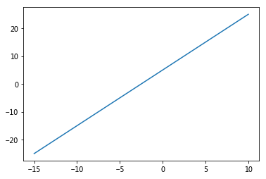
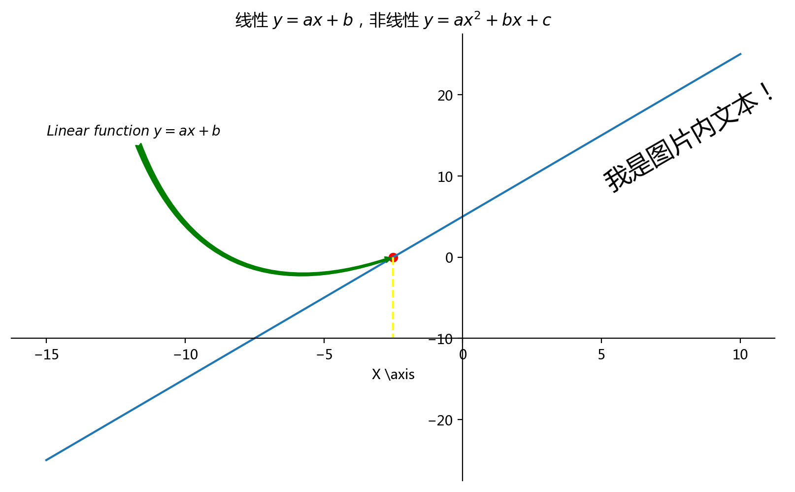
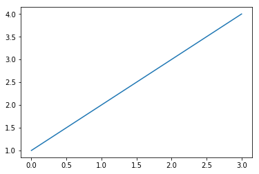

数学计算展示图像
绘制一个简单线性函数图像
import numpy as np
import matplotlib.pyplot as plt
import pandas as pd
plt.rcParams['font.family'] = ['Arial Unicode MS', 'Microsoft Yahei', 'SimHei', 'sans-serif']
#数据
x = np.array([-15, -5, 0, 5, 8, 10])
# x = [-15, -5, 0, 5, 8, 10]
a = 2
b = 5
# 线性函数 y=ax+b
# y = []
# for i in x:
# y.append(a * i + b )
y = a * x + b
y
# 绘制
plt.plot(x,y)
# plt.show()
[<matplotlib.lines.Line2D at 0x4fb39b0>]

# 绘制
plt.figure(figsize=(10,6),dpi=200)
plt.plot(x,y)
#组件
# 标题，可以使用$引入部分latex文本排版语法和公式
plt.title('线性 $y=ax+b$，非线性 $y=ax^{2}+bx+c$')
# 坐标轴标注，当字符串里有反斜杠等转义特殊字符时,字符串前加`r`,表示显示原始字符串
plt.xlabel(r'X \axis')
###############
# 操作轴线
# gca，get corrent axis，获取轴
ax = plt.gca()
#交换轴线
# ax.xaxis.set_ticks_position('top')
# ax.yaxis.set_ticks_position('right')
#去除上侧和右侧的空白轴线
ax.spines['right'].set_color('none')
ax.spines['top'].set_color('none')
#移位轴线
ax.spines['bottom'].set_position(['data', -10])
ax.spines['left'].set_position(['data', 0])
###########
#添加注解标记
#编标记点
x0 = -2.5
y0 = a * x0 + b
plt.scatter(x0,y0,color='red')
#标记线
plt.plot(
[x0,x0],
[y0,-10],
linestyle = '--',
color = 'yellow',
)
# 任意位置增加文本
plt.text(
5, #x轴 坐标
20, #y 轴坐标
'我是图片内文本！',
fontsize=18,
rotation=30,
)
# 任意位置增加带箭头的注释文本
plt.annotate(
r'$Linear\ function\ y=ax+b$', #显示字符串，空格在$内不显示，用反斜杠转义
xytext=(-15, 15), # 文本位置
xy=(x0, y0), # 箭头指向位置
arrowprops=dict( # 字典类型，定义箭头样式
arrowstyle = 'fancy', # 箭头样式，例如 ->,<-,|-|,simple,fancy
color = 'green', # 箭头颜色
connectionstyle="arc3,rad=.5", # 箭头弧度
),
# 下面两个参数将绝对坐标位置设为相对坐标
# xycoords = 'data', # 相对默认坐标系偏移
# textcoords = 'offset points', # 相对坐标，相对箭头原点偏移
)
plt.show()

使用 Pycharm 或其他编辑器绘图
pylab，自动载入 numpy 和 Matplotlib
%pylab inline
Populating the interactive namespace from numpy and matplotlib
plot([1,2,3,4])
[<matplotlib.lines.Line2D at 0x7ab6320>]
